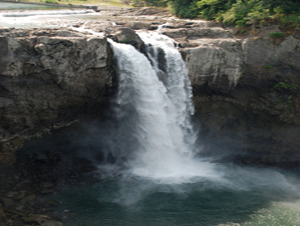

Jared Adam has been in the adventure travel business for the past 25 years. Adventure travel is his passion. Together with his qualified travel staff, Jared Adam conducts tours all over the world and has a variety of fun activities for all ages and ability levels. Jared Adam is ready to help you have a great family vacation or accommodate those who prefer to travel alone. Join us for our whale watching, exotic destinations, or on one of our cycling tours. Discover more information about our tours by clicking the links above.
